|
Bicycle
Dynamics |
|
|
Delft University of Technology |
| INTRO This work started in the Fall of 2002 when I came to Cornell to have my sabbatical leave with Andy Ruina. His line of research began in 1985 when Jim Papadopoulos came to Cornell to work with him (or visa versa). Take a look at this TEDxDelft talk for an intro on our work: |
|

First take a look at the Cornell Yellow Bicycle Demo website to see what is so special about uncontrolled bicycles. Highly unstable at rest but very stable at moderate forward speed! Or look at this VIDEO: Bicycle Stability Demonstration (MP4) (3 MB).
| 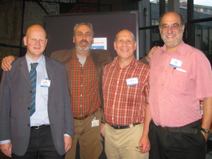 |
We would like to think that this is the definitive review paper on the linearized equations of the motion for a bicycle: J. P. Meijaard, Jim M. Papadopoulos, Andy Ruina, A. L. Schwab, 2007 ``Linearized dynamics equations for the balance and steer of a bicycle: a benchmark and review,'' Proceedings of the Royal Society A 463:1955-1982. doi:10.1098/rspa.2007.1857, or preprint+ESM pdf(578k). Please take a look at the Benchmark Bicycle website. Media Coverage: This paper has drawn some attention in the media. Here you will find some of the media coverage. |
A Matlab Graphical User Interface (GUI) to the calculation of the stability of a bicycle, the implementation of the linearized equations of motion from the 2007 PRS-A paper, is JBike6, free download here.
| And
in this paper we show that neither front-wheel spin
angular momentum nor trail are necessary for
self-stability of an uncontrolled bicycle:
J. D. G. Kooijman, J. P. Meijaard, Jim M. Papadopoulos, Andy Ruina, and A. L. Schwab, "A bicycle can be self-stable without gyroscopic or caster effects", Science 15 April 2011: 332(6027), 339-342. [DOI:10.1126/science.1201959] Preprint, supplementary text, videos and photos are available at the TMS Bicycle website. |
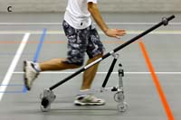 |
An international three-day symposium on Bicycle and Motorcycle Dynamics, BMD2010, has been held at Delft University of Technology, Delft, The Netherlands, October 20-22, 2010. The aim of this symposium is to bring together leading scientists and researchers in the field of bicycle and motorcycle dynamics and control, in a broad sense.
History of bicycle steer and dynamics equations.
“Even now, after we’ve been building them for 100 years, it’s very difficult to understand just why a bicycle works - it’s even difficult to formulate it as a mathematical problem.” — Freeman Dyson interviewed by Stewart Brand in Wired News, February 1998.
Over the past 140 years, scores of other people have studied bicycle dynamics, either for a dissertation, a hobby or sometimes as part of a life’s work on vehicles. This sparse and varied research on the dynamics of bicycles modelled as linked rigid bodies was initially reviewed in Hand (1988). A detailed history of bicycle dynamics studies with a large bibliography, which we update as we go along, can be found here.
Hand, R. S. 1988 ''Comparisons and stability analysis of linearized equations of motion for a basic bicycle model.'' MSc thesis, Cornell University, Ithaca, NY.
Some hard
to find papers:
- B. D.
Herfkens. De stabiliteit van
het rijwiel (”The Stability of the bicycle”). Technical
Report S-98-247-50-10-’49, Instituut voor rijwielontwikkeling,
’sGravenhage, September 1949. (Translated by J.D.G. Kooijman
2006).
- A. J. R. Doyle, The skill of bicycle riding,
PhD thesis, University of Sheffield, UK, 1987.
- A. J. R. Doyle, The essential contribution to
bicycle riding, in J. Patrick and K. Duncan eds.,
Training, human decision making, and control, Elsevier
Science Publisher BV North Holland, pp.351-370, 1988.
BLOG:
Mar
7, 2019: Project Tokyo; the new track bicycle for the
Dutch Olympic Track cycling team has been presented. This new
track bicycle, the KOGA KINSEI, has been designed and build
by a multidisplinary team, project
Tokyo, with the partners:
KOGA - The project leaders, and bicycle builders
TU Delft - Bikefit, handling and control
Actiflow - Aerodynamic design
Pontis Engineering - Structural design
Each track bicycle is build individually for each rider such
that he has maximum power output and good handling at minimal
air drag and maximum structural integrity. More info (in Dutch)
at: https://www.projecttokyo.nl/
and at https://www.koga.com/nl/baanfiets/over-de-koga-kinsei.htm
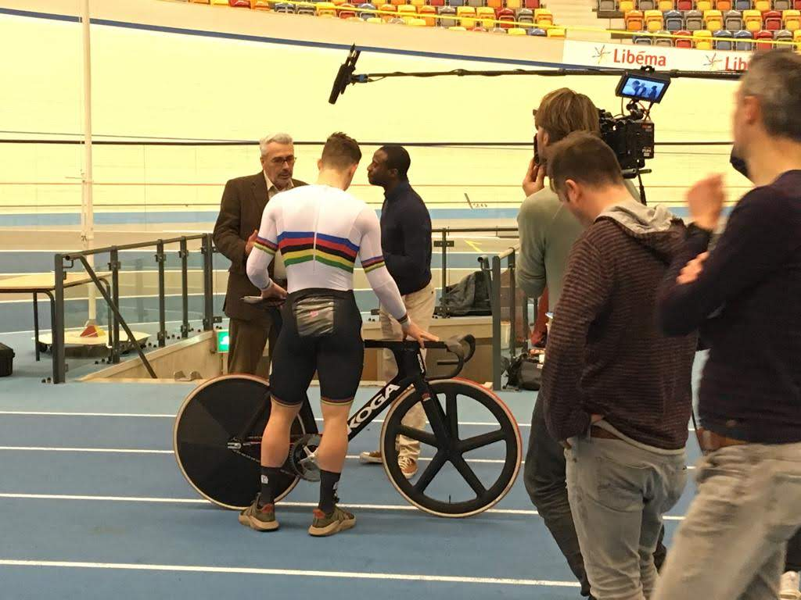 |
 |
Apr 13,
2019: TUDelft demonstrates the steer-assist
bicycle, this is a prototype of a bicycle with a smart motor
in the handlebars which prevents the bicycle from falling at
low speed. This prototype has been developed in
collaboration with the Royal Gazelle bicycle company.
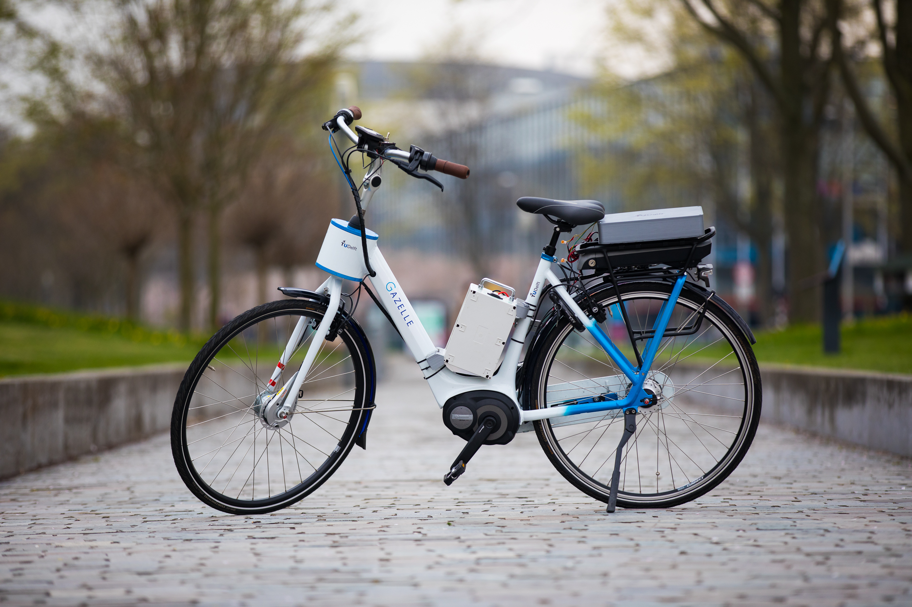 |
Jan 19, 2017: The TUDelft Bicycle Simulator, version 2, Jan 2017. Characteristics are: virtual environment by Unity, visual feedback by a screen (1th and 3rd person view) or by a head mount display (oculus rift), haptic torque feedback on the handle bars driven by a Carvallo/Whipple bicycle computer model, roll angle only in the virtual world, not in the real world.
 |
|
Sep 15, 2015: Oliver Lee
successfully presented some results on the usage of our static
bicycle simulator at the International Cycle Safety Conference
in Hannover, Germany (ICSC2015).
One of the characteristics of the Static Bicycle Simulator
is haptic feedback on the handlebars driven by the bicycle
simulation model. Another aspect is that it does not roll,
therefore we call it the static bicycle simulator.
For visual feedback a simple screen with third person view
is used, but a head mounted display (HMD, such as the
oculus rift)
can be used.
Applications for this simulator are: traffic and
environmental interaction simulation and training, balance
and maneuver assessment, balance training. Below is a short
youtube video to see the static bicycle simulator in
operation.
 Static Bicycle Simulator |
Static Bicycle Simulator on YouTube |
| Jan 17, 2015: A group of TU Delft BSc students (Jibbe Knuit, Frans Kok, Philip Raaphorst and Arne Spek) did a project on measuring vertical stiffness and damping of bicycle tires. A total of 11 tires were measured at 3 normal loads and 3 internal pressures. The setup, data and results can be found at this website: http://bicycle.tudelft.nl/tiretestingvertical/ |  |
| 1 Sep 2014:
TU Delft is one of the participants within the European
Marie Curie Initial Training Network (ITN) on Motorcycle
Rider Integrated Safety,
called MOTORIST. The project is coordinated by Prof. Marco
Pierini, from University of
Firenze (UNIFI), Florence, Italy. More
info on this ITN can be found at: http://www.motorist-ptw.eu/ |
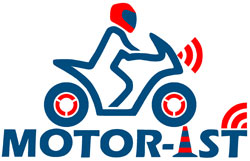 |
| May 2013: Andrew Dressel
successfully defended his PhD thesis entitled: MEASURING
AND MODELING THE MECHANICAL PROPERTIES OF BICYCLE
TIRES, PhD thesis, The University of
Wisconsin-Milwaukee, May 2013. pdf(30Mb) |
|
Nov 27, 2012: Nick Appelman successfully defended his Engineering Dynamics MSc thesis on: Dynamics and Control of a Steer-by-Wire Bicycle, MSc thesis, Delft University of Technology, Nov 2012. His excellent work won the TU Delft Bicycle Lab award "De Gouden Spaak" (Golden Spoke).
|
 |
| Below you find two videos showing the steer-by-wire bicycle in operation | |
The steer-by-wire bicycle can be riden as a normal bicycle. |
The steer-by-wire bicycle with steer assist to make the bicycle stable from a speed as low as 4 km/h. |

Nov 5, 2012: TED talk by Arend Schwab at TEDxDelft2012 on "Why bicycles do not fall":
Feb 8, 2012: Andrew Dressel is
finishing his bicycle tire testrig, see:
http://bicycle.tudelft.nl/tiretesting/
| Feb
8, 2012: Andrew Dressel is finishing his bicycle
tire testrig. All information on the bicycle tire
testing can be found at:
http://bicycle.tudelft.nl/tiretesting/ |
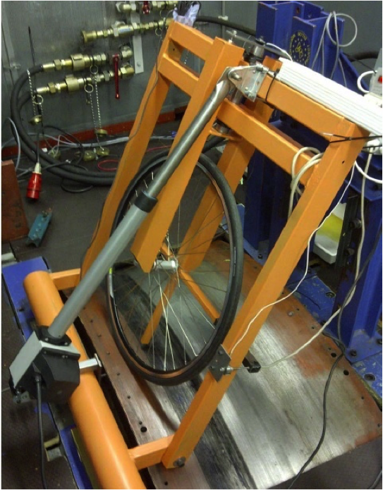 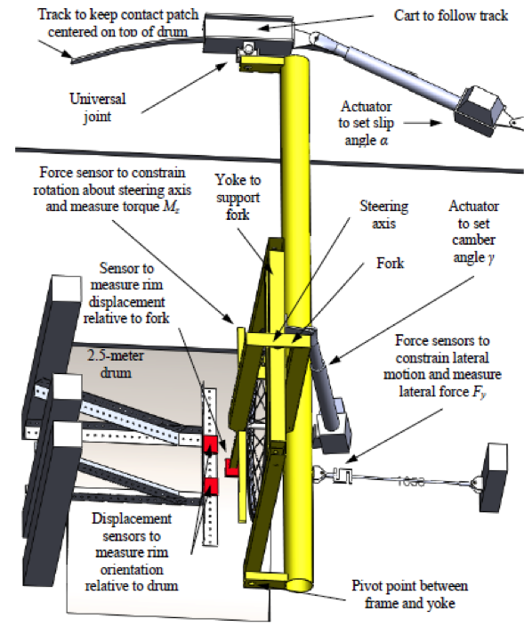 |
Nov 30, 2011: Peter de Lange successfully defended his Engineering Dynamics MSc thesis and graduate Cum Laude:
P.D.L. de Lange, Rider Control Identification in Bicycling, a preliminary analysis, MSc thesis, Delft University of Technology, Nov 2011. (pdf 2.3Mb)
Feb 9, 2011: Eric-Jan van den Ouden successfully defended his Engineering Dynamics MSc thesis:
J.H. van den Ouden, Inventory of bicycle motion for the design of a bicycle simulator, MSc thesis, Delft University of Technology, Jan 2011. (pdf 2.2Mb)
| Sep 22, 2010: This month the bicycle lab moved to the new lab space (room 4A-1-04) which is on the first floor, close to our offices. We are very happy with the new lab; more than 80 m2 of light and clean space with lots of room for table-top experimental setups and high visibility from the corridor because of the large glass windows. | 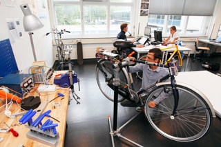 |

May 11, 2010: Marc Evertse successfully defended his MSc thesis:
M.V.C. Evertse, Rider Analysis using a fully instrumented motorcycle, MSc thesis, Delft University of Technology, May 2010. (pdf 1.9Mb)
Aug 19, 2010: After many years of searching and negotiating we are now able to post a selection of the Calspan reports on Bicycle and Motorcycle Dynamics research. Thanks to the effort of Jim Papadopoulos and Doug Milliken!
May 2010 Joep Mutsaerts builds a LEGO Mindstorms NXT based bicycle robot in an assignment for the TUDelft 3mE/PME course Mechatronic System Design II. The lateral stability control is done by the concept of "steer into the undesired fall" and comes down to only one line of code in the controller: SteerMotorVoltage=8*RearFrameLeanRate.
Here you can download the design (NXTbike-GS Design.pdf) and the building instructions (NXTbike_GS_Building_Instructions.pdf).
Feb, 2010 Recently Jason Moore from UCDavis started a google discussion group on single track vehicle dynamics.
July 16, 2009 VPRO Noorderlicht Nieuws made a 5 minute item out of our Bicycle Treadmill experiments. The interview is in Dutch:
|
Jan 9-11, 2009: For three days we have been doing full motion capture of the rider and the bicycle while riding on the large(3X5 m) VU Amsterdam treadmil. This to investigate rider motions on a bicycle. The Optotrack Certus Motion Capture System with active markers was used (thanks to the VU!) with 31 markers (20 on the rider, 11 on the bicycle) at a sample freq of 100 Hz. The test comprised: normal pedalling, towing, hands-free pedalling, pedalling with line tracking. The belt speed (=forward bicycle speed) was varied from 5 to 30 km/h in steps of 5 km/h and then down in the same manner. At every speed we measured for 60 seconds. Going down we also tried 5,4,3,2,.. km/h until one could not stabilize any more. Every test was done with three riders and two bicycles form Batavus, the Browser and a Stratos.
|
| |
|
| Jason, pedalling, Batavus Stratos, 10 km/h | Measured marker motions same run |
|
Oct 28, 2008: Today
we did a number of exploratory tests on the big VU
treadmill (3X5m) to have a first look at human rider
control. The bicycle was a Batavus Browser town
bicycle which was prepared by Jodi and Jason and is
equipped with sensors for: steer angel, steer rate,
rear frame lean and yaw rate, forward speed (2), and
pedaling cadence. A video camera was added mounted on
the rear frame looking at the rider to identify rider
motions relative to the rear frame. 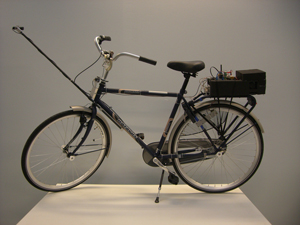 We looked at normal pedaling, towing and pedaling with lateral perturbations in the forward speed range of 5-30 km/h. Here you can find three compilations of the experiments: |
||
|
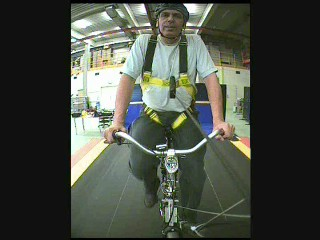 |
|
|
|
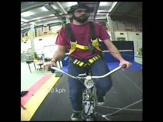 |
||
April 16, 2007: Today we put the instrumented bicycle from Jodi' MSc work on the big VU treadmill. We feel more confident about the usage of this treadmill for our bicycle handling experiments if the instrumented bicycle on the treadmill shows the same lateral dynamic behaviour as on the road. It turned out to be rather tricky to launch the bicycle and catch it in the fall. Jodi got really handy by first launching it from standing aside and then stepping to the rear where he could steer, perturb and catch it. The weave speed of the bicycle on the road is 4.0 m/s (14.4 km/h) [The bicycle is laterally unstable below the weave speed and stable above]. The preliminary result is that the bicycle shows approximately the same weave speed on the treadmill, as you can see from the three videos below:
|
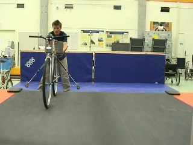 |
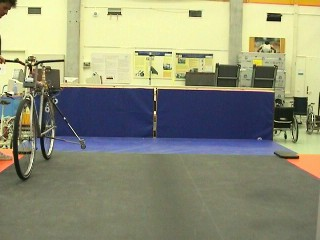 |
| 12 km/h: Unstable (wmv 5.8 Mb) | 16 km/h: Stable (wmv 9.4 Mb) |
|
30 km/h: Very Stable (wmv 6.5 Mb) |
|
April 4, 2007: Today we (Jodi and I) went to the VU University Amsterdam and looked at the big treadmill from the faculty of Human Movement Sciences. My friend Knoek van Soest works there and was so nice to let us do some preliminary tests to see if we could use the treadmill for our bicycle handling quality experiments. The treadmill is big, 3 by 5 m, and has maximum speed of 30 km/h. The minister of Education, Ronald Plasterk, on a work visit at the VU, also showed genuine interest in our experiments!
|
|
April 25, 2006: Jodi Kooijman succesfully defended his Engineering Dynamics MSc thesis:
J. D. G. Kooijman, Experimental Validation of a Model for the Motion of an Uncontrolled Bicycle, MSc thesis, Delft University of Technology, April 2006. (pdf 4.9Mb)
May 29, 2005: Salome, 3
and 11/12 years old, can ride a bicycle! Thanks to the
Cornell/UIUC method. In the last couple of years Andy Ruina,
Jim Papadopoulos and Richard Klein gave me advice on how to
teach your kid to ride a bike. With our first child, Samuel, I
screwed up. I was still unaware of the method so I used
trainer wheels. This was bad. It took him (and me) a long time
to learn how to ride a bike.
With the next, Simon, things went better. I was now aware of
the method and I threw away the trainer wheels. He learned
quicker and now far more enjoys riding his bike.
Then with Salome I started out with a scooter. In this way she mastered
balancing by leaning and steering without the real danger of
falling over. Scooters are slow low riders. After some time
she wanted to go faster. So I took the bicycle, dismounted the
pedals and lowered the seat. She now could pedal the bike like a scooter and get
used to the somewhat different dynamics of the bike opposed to
the scooter. Shortly after this she asked for the pedals. To
make her really connect to the bike we first went to shop and
bought some nice pink and lilac paint (her choice), painted the bike and
mounted the pedals. On Sunday we went out on the street walk
and after an initial push of she rode of all by herself!
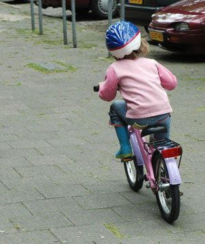
May 24, 2005:Today we did our first serious measurements with the instrumented bike in the big hall at the TUDelft sports centre. We flipped the front fork 180 degrees to get more trail and by such a larger stable forward speed range. Forward speed is now measured with the help of an old Avocet50 speedometer with a 10 magnet ring and coil pickup (thanks Jim!). The trainer wheels are to catch the bike.
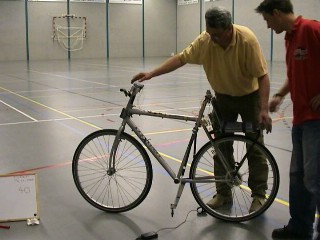 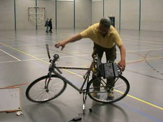
Here is the video file(2.8 Mb) of a typical run, and here is the graph(102 KB) with the measured data (no processing, directly out of LabView). Note that we are actually measuring the stability of a steady large turn.
March 11, 2005, first measurement data from the instrumented bicycle. This work is done by my Delft MSc student Jodi Kooijman. This is the bike:
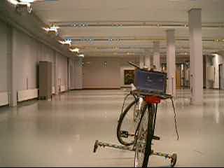 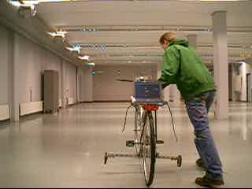
Note the laptop on the rear rack, the manual launcher is Jodi. The bike is instrumented with two rate gyros, one for the lean rate and one for the yaw rate. The steering angle is measured by a potentiometer. The speed is measured (temporarily) by a dynamo (originally meant for the head and tail light). Data is collected via a USB data collecting box driven by LabVIEW and stored on the laptop. Here is an video file(2.8Mb) of the first test run, and here is the graph(23Kb) with the first measured data.
The final goal is to create a Robot Bicycle by adding a steering torque controller, to stabilize the bike, and a small elector motor to maintain forward speed.
(Spring 2003)
Results: Here are some of my preliminary results on the analysis of the dynamic behavior of a bicycle. For the analysis we used our software system SPACAR. This software has been developed at Delft University of Technology and is capable of doing dynamic analysis of flexible multibody systems. The method is based upon the Finite Element Method where the expressions for the generalized strains can be used as constraint equations to model partly rigid systems. Pure rolling is be modeled by zero generalized slips. The equations of motion are expressed in terms of independent generalized coordinates this to facilitate the numerical integration of the equations of motion.
The model of the bicycle is an ordinary Dutch city bike, like this one:
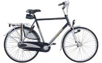
This is a sketch of the SPACAR model, with all the element and node numbers:
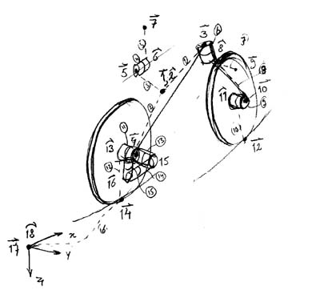
Finally the input file, which contains the complete definition of the bike, looks like this:
In a first analysis we look at the steady motion of the upright bicycle with a rigid rider, hands free, and pure rolling. These are the root-loci from the linearized equations of motion with the forward speed v as a parameter.
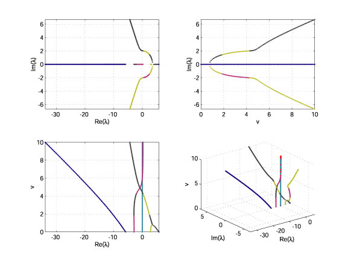
In order to get an idea about the stability of this upright motion look at the bottom-left figure, the forward speed v versus the Real part of the eigenvalues l. Now its customary to have the parameter, here the forward speed v, on the abscissa and the Real part of the eigenvalue l on the ordinate. The stability diagram then looks like this:
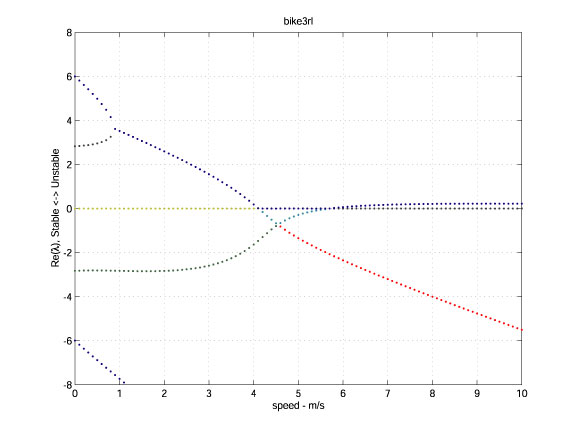
We see that at a forward speed v of less then 0.9 m/s the bike simple falls over, 4 real eigenvalues l with 2 positive ones. We call this the capsize mode. At a speed of 0.9 m/s two real eigenvalues become identical and start forming a conjugated pair after which we have an unstable oscillatory motion, the so-called weave motion. This weave motion is an oscillatory motion in which the bicycle sways about the headed direction. At about 4.1 m/s this weave becomes stable. But then at about 5.7 m/s the previously stable capsize becomes marginally unstable. So at high speed, v>5.7 m/s, we have an unstable capsize mode but the timescale is so long, l=0.2 1/s or t=5 s, that in practice you can easily correct this mode. Now look at the bottom-right part of the previous figure, the 3D depiction of the root loci as a function of the forward speed, and identify the different modes at increasing speed v.
In a second full nonlinear analysis we look at the motion of the bike by means of a forward dynamic analysis of the perturbed upright motion. The perturbation is a small lateral velocity of 0.1 m/s for the whole bike to start the unstable motion, if present. The results are visualized by a number of VRML (Virtual Reality Modeling Language) files at different initial forward speeds. You can view these VRML files in internet browsers like Firefox, Opera or Internet Explorer with the plugin Freeware from Cosmo. For the bike to start moving you must click on the red frame of the bike. If you want to see the path of the rear and front wheel, then you can click on one of the wheels. You can change your viewpoint: look in the Viewpoint List located below left. A very nice one is the one called 'Camera', which is a moving camera with stable horizon (as if you were riding along on the rear passenger seat).
Ok, so now for
the VRML movies:
bike3v000.wrl
at v= 0 m/s, unstable capsize.
bike3v175.wrl
at v=1.75 m/s, unstable weave.
bike3v350.wrl
at v=3.50 m/s, unstable weave.
bike3v368.wrl
at v=3.68 m/s, stable weave in a curve! (a nice nonlinear
result)
bike3v490.wrl
at v=4.90 m/s, a stable weave.
bike3v630.wrl
at v=6.30 m/s, an unstable capsize.
Note that obtaining a speed of 36 km/h and above is no problem in Ithaca, although I myself do not dare to go that fast.
-
Andy Ruina Bicycle Mechanics at Cornell
-
Hugh Hunt's demystifying Gyrobike page
-
Charles Dauwe Fietsen en Fysica
-
Dick Klein's Lose the training wheels